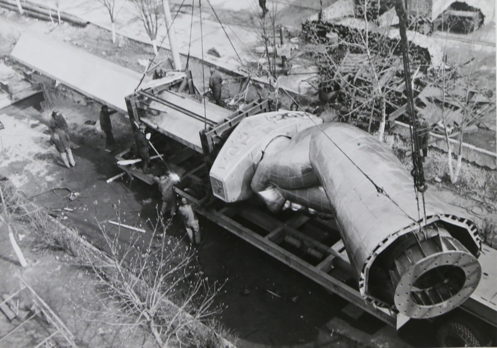
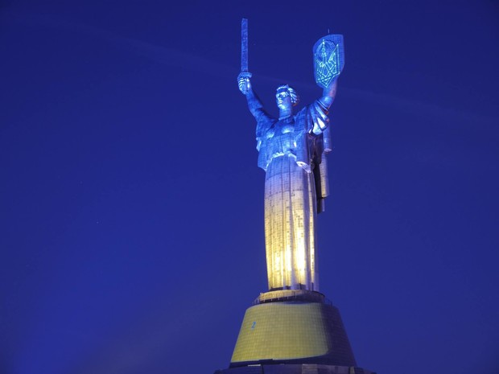

Пам’ятник Батьківщина-мати – один з головних символів столиці України. Він є символом незламності народу, який переміг фашистських загарбників ціною мільйонів життів. Батьківщина-мати Києва здатна витримати потужний землетрус та ураган, як великий народ вистоїть перед найважчими випробуваннями й залишиться незламаним.
Статую було збудовано в 1981 році на території музейного комплексу, присвяченого історії України у Другій світовій війні. Першим автором монументу був Євген Вутечіч. Він працював над меморіальним комплексом у Волгограді. Смерть обірвала роботу цього великого діяча культури. На його місце було призначено Василя Бородая, якому судилося завершити проект, що відразу піддався змінам.
Спочатку планувалося, що монумент, виготовлений із запорізької нержавіючої сталі, покриють золотом. Однак пізніше від цієї ідеї відмовилися. Також з двох сторін від Батьківщини-матері повинна була спадати каскадом вода, яку форсували б кам’яні воїни.
В процес зведення меморіалу за міською легендою втрутилося духовенство. Висота пам’ятки історії була піддана корективам. На даний момент існує дві версії, пов’язані безпосередньо з Києво-Печерською Лаврою, які пояснюють, чому клинок у руках статуї виявився нижчим, ніж було задумано.
Версія перша: справа в тому, що меч за проектом повинен був бути вище хреста Великої Лаврської Дзвіниці. Однак ґрунт під статуєю осідав. Тоді священнослужителі порадили опустити меч. Коли були внесені потрібні зміни в проект пам’ятника Батьківщина-мати, проблеми з ґрунтом припинилися.
За другою версією Митрополиту Київському наснився сон: може початися війна, якщо зброя буде вище хреста. Своє бачення Митрополит виклав Першому секретарю ЦК КП України Щербицькому. За вказівкою чиновника початковий план був змінений.
Насправді меч був випробуваний в аеродинамічній трубі. Московськими вченими було встановлено, яка висота буде найбільш оптимальною. В результаті клинок був скорочений на 4 метри.
З будівництвом Батьківщини-Матері пов’язано багато цікавих фактів:
З 2014 року по всій Україні проходить декомунізація. Вона покликана знищити всі символи і згадки про тоталітарну державу – СРСР. Масово зносяться пам’ятники Леніну, іншим радянським вождям. Вулиці, села і цілі міста знаходять нові назви.
У список об’єктів, які підлягають декомунізації увійшов і музейний комплекс в Києві, присвячений Другій світовій війни. Батьківщина-мати є об’єктом культури. Тому знесення пам’ятника не планується. Натомість в ньому можуть бути проведені певні роботи: з щита необхідно прибрати герб СРСР.
Але все не просто, як здавалося на перший погляд. Згідно законодавства України, внесення змін до пам’ятника заборонено. Крім того, якщо герб прибрати, може статися деформація дуги, на якій в противазі закріплені руки статуї, що тримають щит і меч. Це призведе до руйнування всієї конструкції пам’ятника.
Поки вчені, історики, активісти й чиновники сперечаються, герб як і раніше знаходиться там, де він був встановлений більше ніж 35 років тому. А Батьківщина-мати, як і раніше грізно дивиться вдалину, залишаючись однією з головних визначних пам’яток столиці.
Чи підтримуєте Ви декомунізацію щита Батьківщини-Матері?
Друзі, сьогодні символом незламності українського народу також є наша армія, яка мужньо захищає нас з вами від рашистських загарбників. Давайте задонатимо на ЗСУ аби віддячити їм!